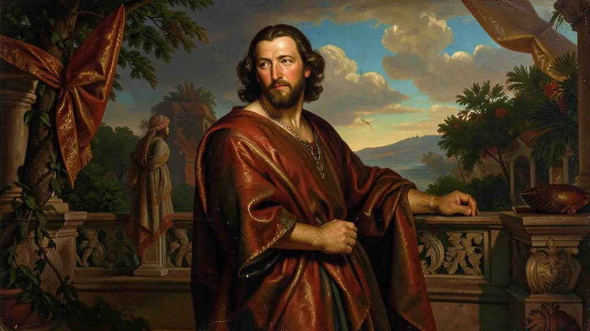
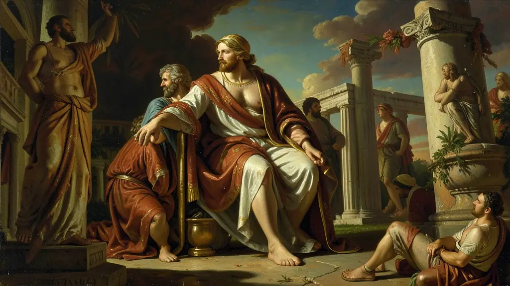
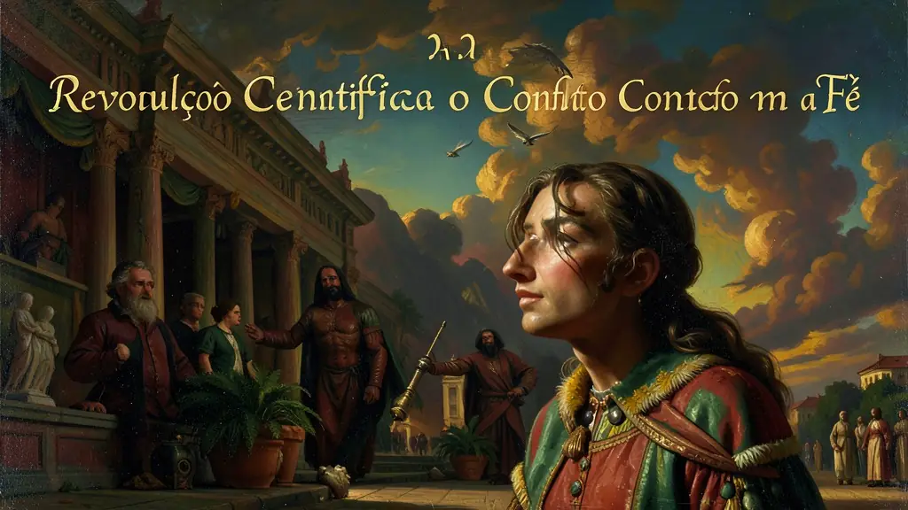

Capítulo 01
1. O Berço Italiano e o Mecenato
A Itália possuía uma burguesia comercial forte que desejava se diferenciar da nobreza decadente através da cultura. Famílias como os Médici patrocinavam artistas não apenas por amor à arte, mas por propaganda política. O 'Mecenas' era o investidor cultural da época, garantindo que pintores e escultores pudessem se dedicar integralmente às suas obras monumentais que adornariam igrejas e palácios.

Capítulo 02
2. Humanismo: O Resgate da Grécia e Roma
Para os renascentistas, o período medieval foi um 'intermédio' de trevas. Eles buscavam na filosofia de Platão e Aristóteles as bases para uma vida baseada na lógica e no prazer terrenal (Hedonismo moderado). O Humanista era o intelectual que lia os clássicos em grego e latim originais, traduzindo as ideias de liberdade e política que haviam sido esquecidas nos mosteiros.

Capítulo 03
3. A Revolução Científica e o Conflito com a Fé
Galileu Galilei, usando o seu telescópio, viu que a lua não era perfeita e que Júpiter tinha suas próprias luas. Isso provava que a Igreja estava errada sobre a mecânica celeste. Galileu foi levado à Inquisição e forçado a negar suas descobertas para não ser queimado vivo. A ciência renascentista nasceu da coragem de observar a natureza para além dos dogmas religiosos.

Capítulo 04
4. Arte: Perspectiva e Realismo Anatômico
Diferente das figuras planas e rígidas da Idade Média, a pintura renascentista introduziu a terceira dimensão (Perspectiva). Artistas como Michelangelo estudavam cadáveres escondidos para entender como os músculos funcionavam, refletindo esse realismo em obras como a Estátua de David. A beleza era vista como uma harmonia matemática perfeita.
Capítulo 05
5. O Legado: Imprensa e Alfabetização
Gutenberg inventou os tipos móveis de metal. Isso permitiu imprimir centenas de cópias de um livro em dias. A Bíblia foi o primeiro grande livro impresso, mas logo panfletos científicos e sátiras políticas começaram a circular. A imprensa democratizou o saber, dificultando a censura e permitindo que as ideias humanistas preparassem o terreno para a Reforma Protestante e o Iluminismo posterior.
O Renascimento não foi apenas uma redescoberta da arte greco-romana, mas um movimento cultural e intelectual que colocou o ser humano e a razão no centro do universo (antropocentrismo). Segundo Peter Burke, o fenômeno deve ser entendido como uma revolução nas mentalidades, onde a curiosidade científica e o individualismo passaram a desafiar o monopólio dogmático da Igreja. O mecenato — o financiamento das artes por burgueses e papas — permitiu que gênios como Michelangelo e Da Vinci transformassem a estética europeia, criando obras que integravam a geometria e a anatomia com uma precisão inédita.
A invenção da imprensa por Gutenberg foi o motor tecnológico que permitiu a rápida difusão das ideias humanistas. Livros que antes eram exclusividade de mosteiros passaram a circular nas mãos de uma burguesia em ascensão, democratizando (ainda que de forma limitada) o acesso ao conhecimento. Este período marcou a transição da Idade Média para a Modernidade, onde a observação da natureza e a experimentação empírica lançaram as bases para a Revolução Científica que viria a seguir.
Para o Enem, é vital compreender como o Renascimento refletia os novos valores de uma sociedade comercial urbana que já não se sentia representada pela rigidez feudal. O humanismo, ao valorizar a virtude pessoal e o sucesso terreno, criou a base ética para o desenvolvimento do capitalismo. No entanto, o Renascimento foi um movimento profundamente elitista: enquanto as classes dominantes celebravam a beleza e a razão, a vasta massa da população camponesa ainda vivia sob o peso de tradições medievais e crises agrícolas.
Fonte: BURKE, Peter. O Renascimento Italiano: Cultura e Sociedade na Itália. Rio de Janeiro: Jorge Zahar, 1999.
Atividades interativas
Questões para fixar
A transição do pensamento medieval para o pensamento renascentista é marcada por uma mudança na visão de mundo. Quais são esses dois conceitos de visão de mundo, respectivamente?
O Mecenato foi um elemento fundamental para a produção artística no Renascimento. O termo refere-se a: